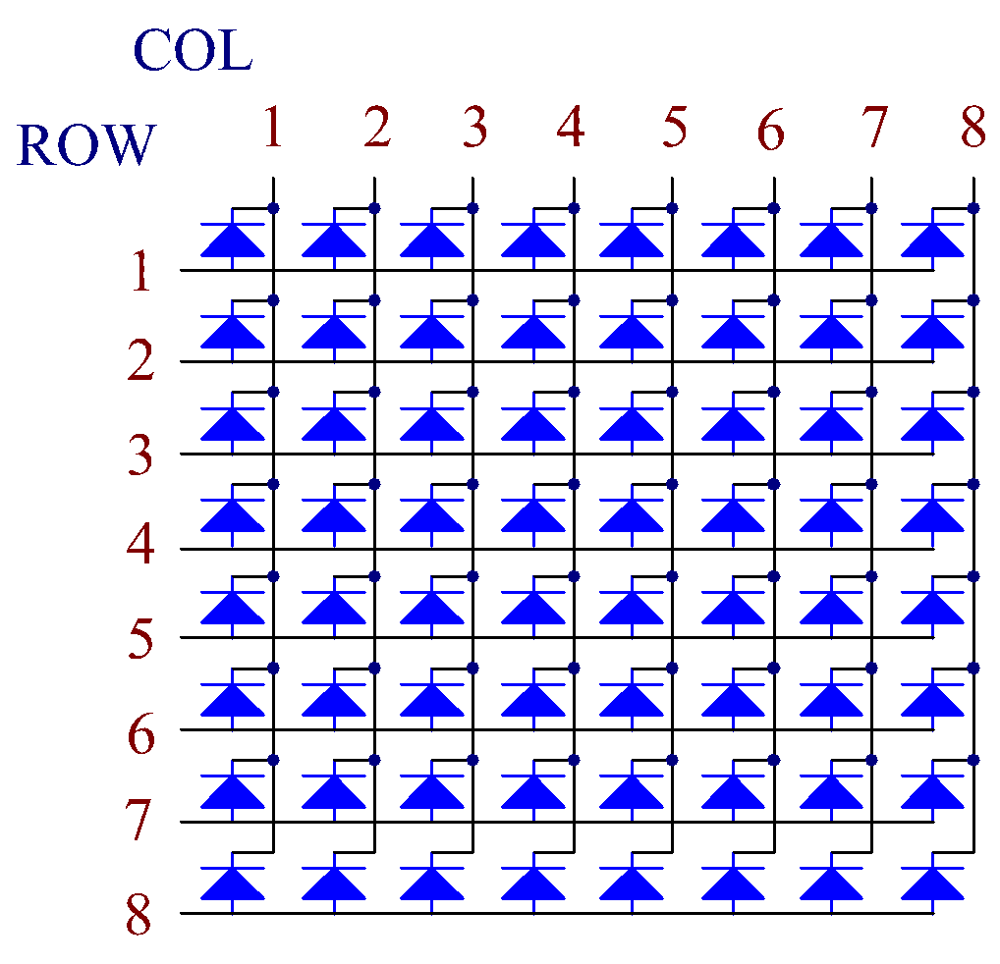

Nota
Ciao, benvenuto nella Community di Facebook dedicata agli appassionati di SunFounder Raspberry Pi, Arduino ed ESP32! Approfondisci le tue conoscenze su Raspberry Pi, Arduino ed ESP32 insieme ad altri appassionati.
Perché unirsi a noi?
Supporto Esperto: Risolvi problematiche post-vendita e sfide tecniche con l’aiuto della nostra comunità e del nostro team.
Impara e Condividi: Scambia consigli e tutorial per migliorare le tue competenze.
Anteprime Esclusive: Ottieni accesso anticipato agli annunci di nuovi prodotti e alle anteprime.
Sconti Speciali: Approfitta di sconti esclusivi sui nostri prodotti più recenti.
Promozioni Festive e Giveaway: Partecipa a concorsi e promozioni speciali.
üëâ Sei pronto a esplorare e creare con noi? Clicca su [Qui] e unisciti subito!
1.1.6 Matrice di LED
Introduzione
Come suggerisce il nome, una matrice di LED è una struttura composta da LED disposti in matrice. L’accensione e lo spegnimento dei LED formano diversi caratteri e schemi.
Componenti Necessari
Per questo progetto, avremo bisogno dei seguenti componenti.

Principio
Matrice di LED
In generale, le matrici di LED possono essere classificate in due tipi: catodo comune (CC) e anodo comune (CA). Sebbene appaiano simili, presentano differenze interne che possono essere verificate con un test. In questo kit viene utilizzato un modello CA, riconoscibile dal codice 788BS sul lato.
Osserva la figura sottostante: i pin sono disposti alle estremità posteriori. Prendendo come riferimento il lato con l’etichetta, i pin su questo lato vanno da 1 a 8, mentre sull’altro lato sono da 9 a 16.
Vista esterna:

Le figure seguenti mostrano la struttura interna. In una matrice di LED CA, ROW rappresenta l’anodo del LED e COL è il catodo; nel caso di una matrice CC, è il contrario. In entrambi i casi, i pin 13, 3, 4, 10, 6, 11, 15 e 16 corrispondono a COL, mentre i pin 9, 14, 8, 12, 1, 7, 2 e 5 corrispondono a ROW. Per accendere il primo LED nell’angolo in alto a sinistra in una matrice CA, imposta il pin 9 su High e il pin 13 su Low; per una matrice CC, imposta il pin 13 su High e il pin 9 su Low. Per accendere l’intera prima colonna, nel caso CA imposta il pin 13 su Low e ROW 9, 14, 8, 12, 1, 7, 2 e 5 su High; per il CC, imposta il pin 13 su High e ROW 9, 14, 8, 12, 1, 7, 2 e 5 su Low.
Vista interna:
{kind=link}
Numerazione dei pin corrispondente a righe e colonne:
COL |
1 |
2 |
3 |
4 |
5 |
6 |
7 |
8 |
Pin No. |
13 |
3 |
4 |
10 |
6 |
11 |
15 |
16 |
ROW |
1 |
2 |
3 |
4 |
5 |
6 |
7 |
8 |
Pin No. |
9 |
14 |
8 |
12 |
1 |
7 |
2 |
5 |
Inoltre, in questo progetto vengono utilizzati due chip 74HC595. Uno controlla le righe della matrice LED, mentre l’altro controlla le colonne.
Schema a Blocchi
Nome T-Board |
fisico |
wiringPi |
BCM |
GPIO17 |
Pin 11 |
0 |
17 |
GPIO18 |
Pin 12 |
1 |
18 |
GPIO27 |
Pin 13 |
2 |
27 |

Procedure Sperimentali
Passo 1: Costruisci il circuito. Poiché il cablaggio è complesso, procediamo passo per passo. Per prima cosa, inserisci il T-Cobbler, la matrice di LED e i due chip 74HC595 nella breadboard. Collega il 3.3V e il GND del T-Cobbler ai fori sui due lati della board, quindi collega i pin 16 e 10 dei due chip 74HC595 a VCC, e i pin 13 e 8 a GND.
Nota
Nell’immagine Fritzing sopra, il lato con l’etichetta si trova in basso.
{kind=link}
Passo 2: Collega insieme il pin 11 dei due chip 74HC595 e quindi a GPIO27; poi il pin 12 dei due chip, e a GPIO18; successivamente, il pin 14 del 74HC595 sul lato sinistro a GPIO17 e il pin 9 al pin 14 del secondo 74HC595.

Passo 3: Il chip 74HC595 sul lato destro controlla le colonne della matrice LED. Consulta la tabella seguente per le corrispondenze. Pertanto, i pin Q0-Q7 del 74HC595 corrispondono rispettivamente ai pin 13, 3, 4, 10, 6, 11, 15 e 16.
74HC595 |
Q0 |
Q1 |
Q2 |
Q3 |
Q4 |
Q5 |
Q6 |
Q7 |
LED Dot Matrix |
13 |
3 |
4 |
10 |
6 |
11 |
15 |
16 |
{kind=link}
Passo 4: Ora collega le righe della matrice di LED. Il chip 74HC595 sul lato sinistro controlla le righe della matrice LED. Consulta la tabella seguente per le corrispondenze. Si può notare che i pin Q0-Q7 del 74HC595 sul lato sinistro corrispondono rispettivamente ai pin 9, 14, 8, 12, 1, 7, 2 e 5.
74HC595 |
Q0 |
Q1 |
Q2 |
Q3 |
Q4 |
Q5 |
Q6 |
Q7 |
LED Dot Matrix |
9 |
14 |
8 |
12 |
1 |
7 |
2 |
5 |
{kind=link}
Passo 5: Apri il file di codice.
cd ~/davinci-kit-for-raspberry-pi/python-pi5
Passo 6: Esegui il codice.
sudo python3 1.1.6_led_dot_matrix.py
Dopo aver eseguito il codice, la matrice di LED si illumina e si spegne riga per riga e colonna per colonna.
Avvertimento
Se viene visualizzato l’errore RuntimeError: Cannot determine SOC peripheral base address, consulta Se gpiozero non funziona.
Codice
Nota
Puoi Modificare/Reimpostare/Copiare/Eseguire/Interrompere il codice qui sotto. Prima di farlo, però, è necessario accedere al percorso del codice sorgente come davinci-kit-for-raspberry-pi/python-pi5. Dopo aver modificato il codice, puoi eseguirlo direttamente per vedere l’effetto.
#!/usr/bin/env python3
from gpiozero import OutputDevice
from time import sleep
# Definisce i pin GPIO collegati al registro a scorrimento 74HC595
SDI = OutputDevice(17) # Ingresso Dati Seriale
RCLK = OutputDevice(18) # Clock del Registro
SRCLK = OutputDevice(27) # Clock del Registro a Scorrimento
# Definisce i pattern per il display della matrice; le righe (ROW) sono anodi (+), le colonne (COL) sono catodi (-)
# Pattern per le righe (segnali anodici)
code_H = [0x01, 0xff, 0x80, 0xff, 0x01, 0x02, 0x04, 0x08, 0x10, 0x20, 0x40, 0x80, 0xff, 0xff, 0xff, 0xff, 0xff, 0xff, 0xff, 0xff]
# Pattern per le colonne (segnali catodici)
code_L = [0x00, 0x7f, 0x00, 0xfe, 0x00, 0x00, 0x00, 0x00, 0x00, 0x00, 0x00, 0x00, 0xfe, 0xfd, 0xfb, 0xf7, 0xef, 0xdf, 0xbf, 0x7f]
# Trasferisce i dati a 74HC595
def hc595_shift(dat):
""" Shift data to the 74HC595 shift register for displaying on the matrix. """
for i in range(8):
# Imposta il valore di SDI e attiva il clock del registro a scorrimento
SDI.value = 0x80 & (dat << i)
SRCLK.on()
SRCLK.off()
# Attiva il clock del registro per aggiornare il display
RCLK.on()
sleep(0.001)
RCLK.off()
def main():
""" Main loop for cycling through display patterns. """
while True:
# Scorri i pattern in ordine crescente
for i in range(len(code_H)):
hc595_shift(code_L[i])
hc595_shift(code_H[i])
sleep(0.1)
# Scorri i pattern in ordine decrescente
for i in range(len(code_H)-1, -1, -1):
hc595_shift(code_L[i])
hc595_shift(code_H[i])
sleep(0.1)
# Esegui il ciclo principale e gestisci l'interruzione con tastiera in modo ordinato
try:
main()
except KeyboardInterrupt:
pass
Spiegazione del Codice
Questo snippet importa le classi necessarie per il progetto.
OutputDevicedagpiozeroè utilizzato per controllare i componenti hardware collegati ai pin GPIO, mentresleepdatimeè utilizzato per aggiungere ritardi.#!/usr/bin/env python3 from gpiozero import OutputDevice from time import sleep
In questa sezione, si inizializzano i pin GPIO collegati al registro a scorrimento 74HC595.
SDIè l’Ingresso Dati Seriale,RCLKè il Clock del Registro eSRCLKè il Clock del Registro a Scorrimento. Questi pin sono usati per trasferire i dati nel registro e controllare la visualizzazione della matrice LED.# Definisce i pin GPIO collegati al registro a scorrimento 74HC595 SDI = OutputDevice(17) # Ingresso Dati Seriale RCLK = OutputDevice(18) # Clock del Registro SRCLK = OutputDevice(27) # Clock del Registro a Scorrimento
code_Hecode_Ldefiniscono i pattern binari per controllare rispettivamente le righe (anodi) e le colonne (catodi) della matrice LED. Ogni elemento in questi array rappresenta un pattern binario che controlla quali LED sono accesi o spenti nella matrice.# Definisce i pattern per il display della matrice; le righe (ROW) sono anodi (+), le colonne (COL) sono catodi (-) # Pattern per le righe (segnali anodici) code_H = [0x01, 0xff, 0x80, 0xff, 0x01, 0x02, 0x04, 0x08, 0x10, 0x20, 0x40, 0x80, 0xff, 0xff, 0xff, 0xff, 0xff, 0xff, 0xff, 0xff] # Pattern per le colonne (segnali catodici) code_L = [0x00, 0x7f, 0x00, 0xfe, 0x00, 0x00, 0x00, 0x00, 0x00, 0x00, 0x00, 0x00, 0xfe, 0xfd, 0xfb, 0xf7, 0xef, 0xdf, 0xbf, 0x7f]
Questa funzione trasferisce un byte di dati (
dat) nel registro a scorrimento 74HC595. Itera su ciascun bit nel byte, impostando il pinSDIin base al valore del bit, e attiva il pinSRCLKper trasferire il bit nel registro. Dopo aver trasferito tutti i bit, attiva il pinRCLKper aggiornare il display della matrice LED.# Trasferisce i dati a 74HC595 def hc595_shift(dat): """ Shift data to the 74HC595 shift register for displaying on the matrix. """ for i in range(8): # Imposta il valore di SDI e attiva il clock del registro a scorrimento SDI.value = 0x80 & (dat << i) SRCLK.on() SRCLK.off() # Attiva il clock del registro per aggiornare il display RCLK.on() sleep(0.001) RCLK.off()
La funzione principale contiene un ciclo infinito che scorre attraverso i pattern predefiniti per la matrice LED. Utilizza la funzione
hc595_shiftper inviare pattern di riga e colonna (code_Hecode_L) al registro a scorrimento, prima in ordine crescente e poi in ordine decrescente, creando un display dinamico.def main(): """ Main loop for cycling through display patterns. """ while True: # Scorri i pattern in ordine crescente for i in range(len(code_H)): hc595_shift(code_L[i]) hc595_shift(code_H[i]) sleep(0.1) # Scorri i pattern in ordine decrescente for i in range(len(code_H)-1, -1, -1): hc595_shift(code_L[i]) hc595_shift(code_H[i]) sleep(0.1)
Questo segmento assicura che il programma possa essere interrotto usando una tastiera (Ctrl+C). Uscirà dal ciclo principale senza fermate brusche o perdita di risorse.
# Esegui il ciclo principale e gestisci l'interruzione con tastiera in modo ordinato try: main() except KeyboardInterrupt: pass